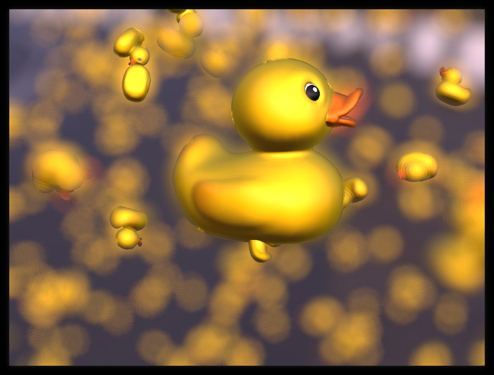

Demonstrates the use of the Kuesa C++ API to import a glTF2 file and extract assets from it.

The easiest way to get started is to subclass the Qt3DExtras::Qt3DWindow
class Window : public Qt3DExtras::Qt3DWindow
The SceneEntity will hold the assets we will load later. It will also act as our root entity.
m_scene = new Kuesa::SceneEntity(); m_scene->addComponent(new DefaultEnvMap(m_scene));
We can reuse the default camera provided by Qt3DExtras::Qt3DWindow
camera()->setPosition(QVector3D(5, 1.5, 5)); camera()->setViewCenter(QVector3D(0, 0.5, 0)); camera()->setUpVector(QVector3D(0, 1, 0)); camera()->setAspectRatio(16.f / 9.f); auto camController = new Qt3DExtras::QOrbitCameraController(m_scene); camController->setCamera(camera());
We can use the pre made ForwardRenderer FrameGraph.
auto fg = new Kuesa::ForwardRenderer(); fg->setCamera(camera()); fg->setGamma(2.2f); fg->setExposure(1.f); fg->setClearColor("white"); setActiveFrameGraph(fg);
In order to load a glTF2 file, Kuesa provides the GLTF2Importer element. If the sceneEntity property is set to a valid SceneEntity instance, Qt 3D assets generated while parsing the file will be automatically added to the various asset collections.
auto gltfImporter = new Kuesa::GLTF2Importer(m_scene); gltfImporter->setSceneEntity(m_scene); gltfImporter->setSource(QUrl{ "qrc:///assets/models/duck/Duck.glb" }); connect(gltfImporter, &Kuesa::GLTF2Importer::statusChanged, this, &Window::on_sceneLoaded);
Kuesa provides Skybox. It expects a patch and an extension.
// Skybox creation auto skybox = new Kuesa::Skybox(m_scene); skybox->setBaseName(envmap("radiance")); skybox->setExtension(".dds");
We can use of of Kuesa's pre made post processing effects such as DepthOfFieldEffect.
// Depth-of-field auto dof = new Kuesa::DepthOfFieldEffect(); dof->setRadius(15.0f); dof->setFocusRange(2.0f); dof->setFocusDistance(6.5f); fg->addPostProcessingEffect(dof);
Usually, you will want to interact with some elements of your scene.
You can use the Kuesa Studio gltfEditor to introspect a glTF2 scene files and find the names of the various assets it contains.
Upon successful loading of our glTF2 file, we will be able to proceed with asset retrieval.
void on_sceneLoaded(Kuesa::GLTF2Importer::Status status) { if (status == Kuesa::GLTF2Importer::Ready) {
Using the gltfEditor we know our scene files contains a Duck Entity name "KuesaEntity_0"..
We can therefore retrieve it with:
// First let's take the components that we are going to use to create our clones // Gotten from gammaray auto parent = m_scene->entity("KuesaEntity_0");
In turn, using Qt3D Component API, we can retrieve the Qt3DRender::QGeometry, Qt3DRender::QMaterial components of the previously retrieved entity.
auto *orig_entity = qobject_cast<Qt3DCore::QEntity *>(m_scene->entity("KuesaEntity_2")->childNodes()[1]); auto *orig_geometry = componentFromEntity<Qt3DRender::QGeometryRenderer>(orig_entity); auto *orig_material = componentFromEntity<Qt3DRender::QMaterial>(orig_entity);
Then, we can create several entities referencing the same material and geometry.
// Then create clones by giving them a custom transform, and the same components than before for (int i = 0; i < Ducks; i++) { auto new_entity = new Qt3DCore::QEntity{ parent }; auto new_transform = new Qt3DCore::QTransform; new_transform->setScale(0.2f); new_transform->setTranslation(QVector3D(rand() % r - r / 2, rand() % r - r / 2, rand() % r - r / 2)); new_transform->setRotationX(rand() % 360); new_transform->setRotationY(rand() % 360); new_transform->setRotationZ(rand() % 360); new_entity->addComponent(new_transform); new_entity->addComponent(orig_geometry); new_entity->addComponent(orig_material); m_transforms[i] = new_transform; }
Subclassing the timerEvent function on Qt3DExtras::Qt3DWindow allows us to add some logic to be executed at every frame.
void timerEvent(QTimerEvent *event) override { Q_UNUSED(event) for (auto transform : m_transforms) { transform->setRotationX(transform->rotationX() + 0.1f); transform->setRotationY(transform->rotationY() + 0.1f); transform->setRotationZ(transform->rotationZ() + 0.1f); } }
Please note that glTF2 offers way to embedded animations in the glTF files directly. This should be preferred unless you want to manually do animations like illustrated above.
Files:
Images:
{kind=link}
{kind=link}
{kind=link}
{kind=link}